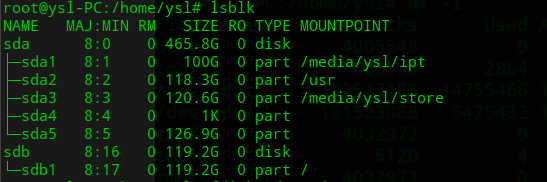
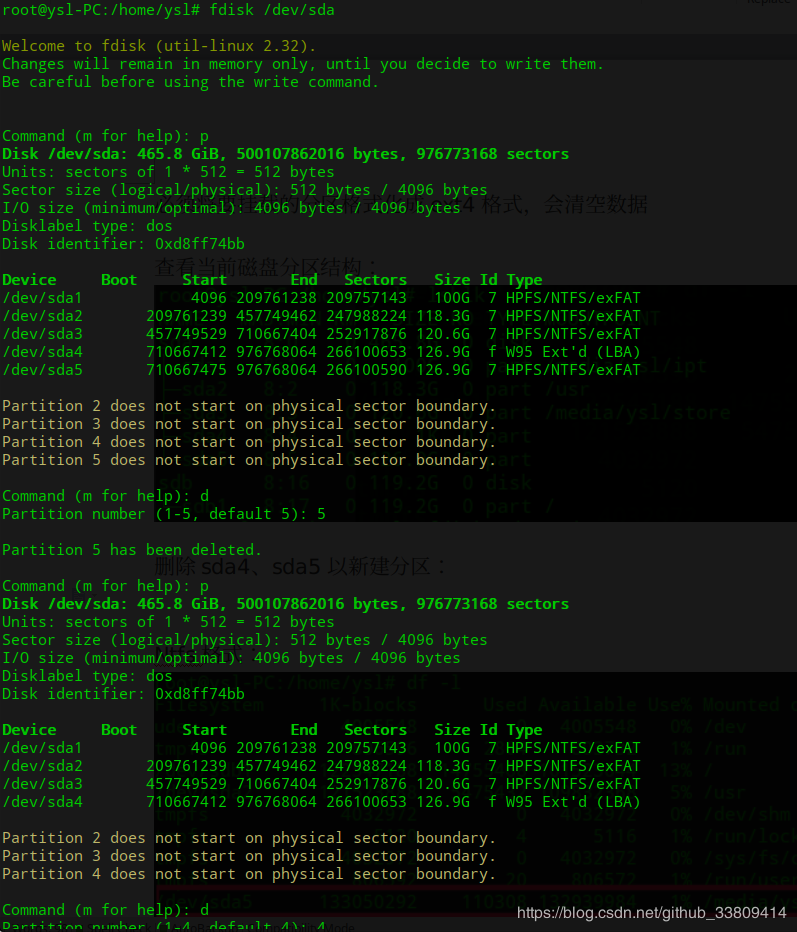
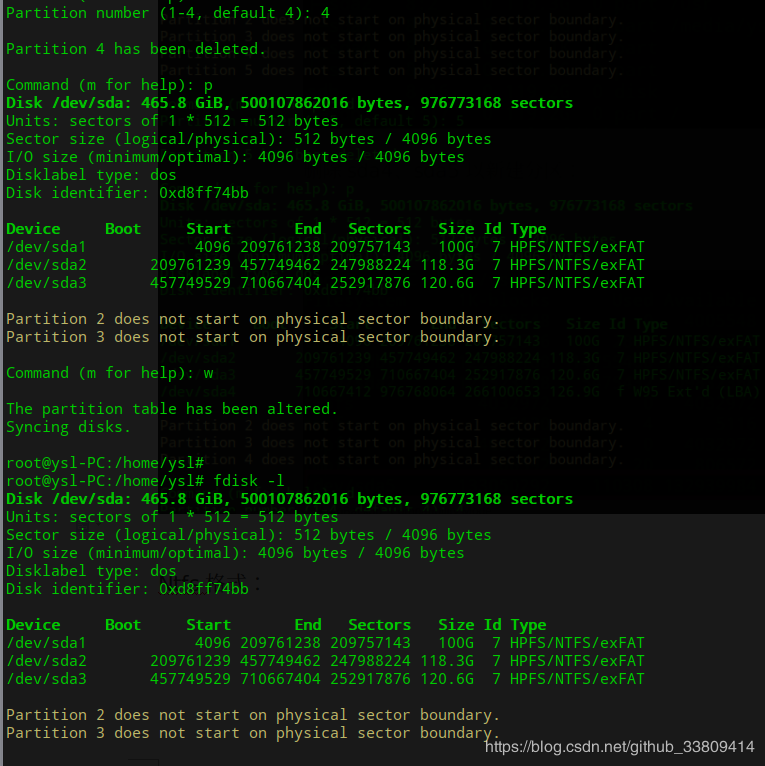
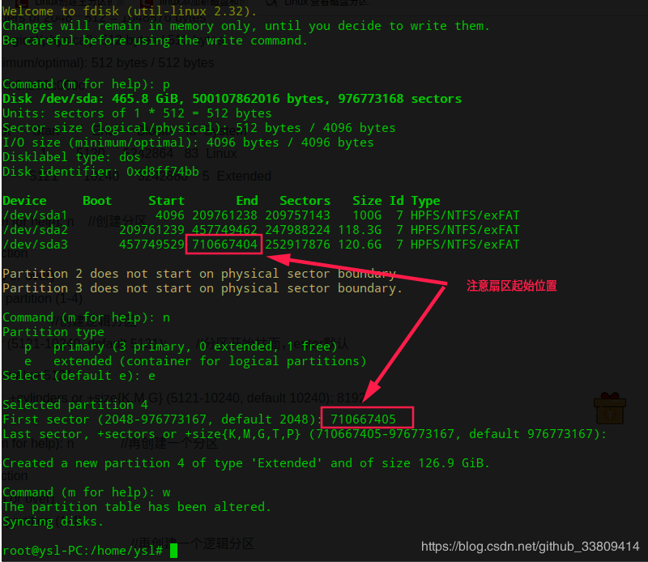
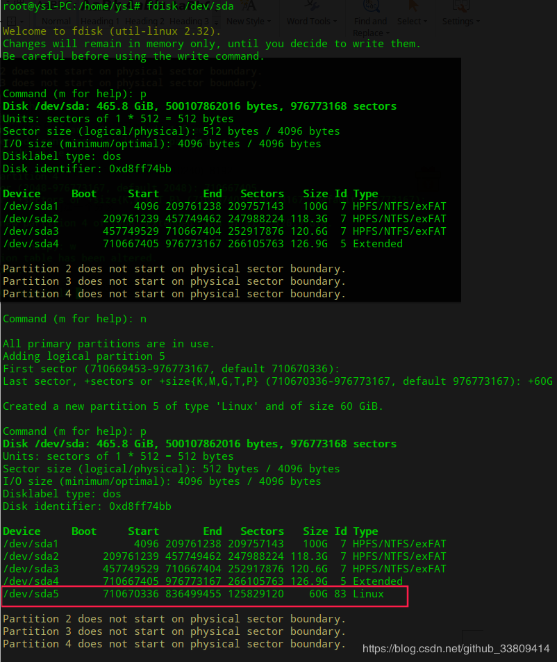

<!DOCTYPE html><html lang="en"><head><meta name="generator" content="Hexo 3.9.0"><meta charset="utf-8"><meta name="keywords" content="松林羊, ysl, songlinsheep, andus, blog, 个人站点, 个人网站"><meta name="description" content="松林羊的个人网站，用于记录，分享。欢迎交流^-^"><meta name="viewport" content="width=device-width,initial-scale=1,maximum-scale=1"><title> Linux 新建分区 | 松林羊</title><link rel="shortcut icon" href="/smile.ico"><link rel="stylesheet" href="/css/style.css"><link rel="stylesheet" href="/fancybox/jquery.fancybox.min.css"><script src="/js/pace.min.js"></script><script>!function(e,t,o,c,i,a,n){e.DaoVoiceObject=i,e[i]=e[i]||function(){(e[i].q=e[i].q||[]).push(arguments)},e[i].l=1*new Date,a=t.createElement(o),n=t.getElementsByTagName(o)[0],a.async=1,a.src=c,a.charset="utf-8",n.parentNode.insertBefore(a,n)}(window,document,"script",("https:"==document.location.protocol?"https:":"http:")+"//widget.daovoice.io/widget/0f81ff2f.js","daovoice"),daovoice("init",{app_id:"1559132c"}),daovoice("update")</script></head></html><body><main class="content"><section class="outer"><article id="post-Linux-新建分区" class="article article-type-post" itemscope itemprop="blogPost" data-scroll-reveal><div class="article-inner"><header class="article-header"><h1 class="article-title" itemprop="name"> Linux 新建分区</h1></header><div class="article-meta"> <a href="/2018/12/22/Linux-新建分区/" class="article-date"><time datetime="2018-12-22T09:19:53.000Z" itemprop="datePublished">2018-12-22</time></a><div class="article-category"> <a class="article-category-link" href="/categories/Linux/">Linux</a></div> &emsp;<i class="fe fe-bar-chart"></i> <span class="post-count">899</span>字 &emsp;<i class="fe fe-clock"></i> <span class="post-count">3</span>分钟</div><div class="tocbot"></div><div class="article-entry" itemprop="articleBody"><h3 id="对Linux分区的理解"><a href="#对Linux分区的理解" class="headerlink" title="对Linux分区的理解"></a>对Linux分区的理解</h3><ul><li><p>硬盘接口：<br>1.IDE接口：Linux对连接到IDE接口的硬盘使用/dev/hdx的方式命名，x一般为a,b,c等<br>2.SCSI接口：Linux对连接到SCSI接口的硬盘使用/dev/sdx的方式命名，x一般为a,b,c等。其实Linux对连接到SCSI接口的硬盘是使用ID号区分的。ID范围是：0-15，ID为0的硬盘名为/dev/sda，类推。SCSI主控制器通常占用ID号7，所以SCSI接口最多可连接15个硬盘。</p></li><li><p>分区：<br>1.分区是针对磁盘，并不是对某一个分区分区。<br>2.硬盘使用前要进行分区，可分为主分区，扩展分区，逻辑分区。硬盘使用前要进行分区，可分为主分区，扩展分区，逻辑分区。<br>3.一块硬盘最多4个主分区，最多1个扩展分区，逻辑分区可以有若干个。<br>4.扩展分区会使用一个主分区的位置。理解为：主分区数+扩展分区数不能超过4个。<br>5.主分区中不能再划分其他类型的分区，相当于一个逻辑磁盘。<br>6.扩展分区本身不存储任何东西，不能直接使用，也不能格式化，只是用于区分逻辑分区。所以，扩展分区容量=n个逻辑分区容量之和，从而：硬盘的容量=主分区容量+扩展分区容量。<br>7.其中1-4为主分区+扩展分区编号，逻辑分区编号从5开始。</p></li><li><p>查看当前磁盘及分区情况<br><br>可以看到我这里有两个磁盘，sda、sdb。其中sda有5个分区(sda4为扩展分区，sda5为逻辑分区)、sdb只有1个分区。</p></li></ul><h3 id="对硬盘进行分区操作"><a href="#对硬盘进行分区操作" class="headerlink" title="对硬盘进行分区操作"></a>对硬盘进行分区操作</h3><figure class="highlight plain"><table><tr><td class="gutter"><pre><span class="line">1</span><br><span class="line">2</span><br><span class="line">3</span><br><span class="line">4</span><br><span class="line">5</span><br><span class="line">6</span><br><span class="line">7</span><br><span class="line">8</span><br><span class="line">9</span><br><span class="line">10</span><br><span class="line">11</span><br><span class="line">12</span><br><span class="line">13</span><br><span class="line">14</span><br><span class="line">15</span><br><span class="line">16</span><br><span class="line">17</span><br><span class="line">18</span><br><span class="line">19</span><br><span class="line">20</span><br><span class="line">21</span><br><span class="line">22</span><br><span class="line">23</span><br><span class="line">24</span><br><span class="line">25</span><br><span class="line">26</span><br><span class="line">27</span><br><span class="line">28</span><br><span class="line">29</span><br><span class="line">30</span><br></pre></td><td class="code"><pre><span class="line">fdisk /dev/sda  //操作sda磁盘</span><br><span class="line">...</span><br><span class="line">Command (m for help): m          //输出帮助信息</span><br><span class="line"> Command action</span><br><span class="line">    a   toggle a bootable flag    //设置启动分区</span><br><span class="line">    b   edit bsd disklabel        //编辑分区标签</span><br><span class="line">    c   toggle the dos compatibility flag //切换DOS兼容性标志</span><br><span class="line">    d   delete a partition        //删除一个分区</span><br><span class="line">    l   list known partition types  //列出分区类型</span><br><span class="line">    m   print this menu           //输出帮助信息</span><br><span class="line">    n   add a new partition       //建立一个新的分区</span><br><span class="line">    o   create a new empty DOS partition table //创建一个新的空白DOS分区表</span><br><span class="line">    p   print the partition table    //打印分区表</span><br><span class="line">    q   quit without saving changes  //退出不保存设置</span><br><span class="line">    s   create a new empty Sun disklabel 创建一个新的空太阳标签</span><br><span class="line">    t   change a partition&apos;s system id  //改变分区的ID</span><br><span class="line">    u   change display/entry units    //改变显示的单位</span><br><span class="line">    v   verify the partition table    //检查验证分区表</span><br><span class="line">    w   write table to disk and exit  //保存分区表</span><br><span class="line">    x   extra functionality (experts only)</span><br><span class="line">    Command (m for help):n     </span><br><span class="line">Command action</span><br><span class="line">   e   extended                 //扩展分区</span><br><span class="line">   p   primary partition (1-4)  //主分区（最多4个）</span><br><span class="line">p</span><br><span class="line">Partition number (1-4): 1       //分区号(卷标)</span><br><span class="line">First cylinder (1-2597, default 1): 1 // 起始扇区</span><br><span class="line">Last cylinder or +size or +sizeM or +sizeK (1-2597, default 2597):+100M // 结束扇区 或大小</span><br><span class="line"></span><br><span class="line">Command (m for help): w          //保存刚才的配置信息。</span><br></pre></td></tr></table></figure><h3 id="案例"><a href="#案例" class="headerlink" title="案例"></a>案例</h3><ul><li><p>删除sda4、sda5以新建分区<br><br></p></li><li><p>新建扩展分区<br><br>我这里应该是有碎片区域，导致默认的扇区起始位置没有紧接sda3扇区之后。<br>一般扩展分区就需要包含剩下的全部空间，否则就浪费了。</p></li><li><p>在扩展分区中新建逻辑分区<br></p><p>继续分区，个数无限制，任意分配，我这里分配2个<br></p></li></ul><p>其他：<br>将分区格式化为NTFS格式：<code>sudo mkfs -t ntfs /dev/sda6</code></p><blockquote><p>参考：<br><a href="https://www.cnblogs.com/sangmu/p/6629594.html" target="_blank" rel="noopener">https://www.cnblogs.com/sangmu/p/6629594.html</a><br><a href="https://www.cnblogs.com/hanson1/p/7102206.html" target="_blank" rel="noopener">https://www.cnblogs.com/hanson1/p/7102206.html</a><br><a href="https://www.cnblogs.com/lbole/archive/2018/04/25/8904298.html" target="_blank" rel="noopener">https://www.cnblogs.com/lbole/archive/2018/04/25/8904298.html</a></p></blockquote></div><footer class="article-footer"><ul class="article-tag-list"><li class="article-tag-list-item"><a class="article-tag-list-link" href="/tags/Linux分区/">Linux分区</a></li></ul><div style="text-align:center;color:#ccc;font-size:14px;margin-top:10px"> ------------- 本文结束&nbsp;<i class="fe fe-smile"></i>&nbsp;感谢您的阅读 -------------</div></footer></div><nav class="article-nav"> <a href="/2018/12/22/Linux-usr目录挂载到新分区/" class="article-nav-link"><strong class="article-nav-caption">前一篇</strong><div class="article-nav-title"> Linux /usr目录挂载到新分区</div></a> <a href="/2018/12/17/锐捷Linux客户端连接校园网/" class="article-nav-link"><strong class="article-nav-caption">后一篇</strong><div class="article-nav-title">锐捷Linux客户端连接校园网</div></a></nav><div class="gitalk" id="gitalk-container"></div><link rel="stylesheet" href="https://unpkg.com/gitalk/dist/gitalk.css"><script src="https://unpkg.com/gitalk/dist/gitalk.min.js"></script><script src="https://cdn.bootcss.com/blueimp-md5/2.10.0/js/md5.min.js"></script><script type="text/javascript">var gitalk=new Gitalk({clientID:"b2aefba3a8adad5bf2f5",clientSecret:"59c734c0cc341bf3df8fe19109ca9da78513a29a",repo:"hexo-blog-gitalk",owner:"andus-top",admin:["andus-top"],id:md5(location.pathname),distractionFreeMode:!1,pagerDirection:"last"});gitalk.render("gitalk-container")</script></article></section><footer class="footer"><div class="outer"><ul class="list-inline"><li>&copy; 2019 松林羊</li><li>Theme <a href="https://github.com/zhwangart/hexo-theme-ocean">Ocean</a></li><ul class="list-inline"><li><i class="fe fe-smile-alt"></i> 访客数:<span id="busuanzi_value_site_uv"></span></li><li><i class="fe fe-bookmark"></i> 文章访问量:<span id="busuanzi_value_page_pv"></span></li></ul></ul><ul class="list-inline"><li>全站共<span class="post-count">9.7k</span>字</li><ul class="list-inline"><li><span id="timeDate">载入天数...</span><span id="times">载入时分秒...</span></li></ul><script>var now=new Date;function createtime(){var n=new Date("07/28/2019 10:02:00");now.setTime(now.getTime()+250),days=(now-n)/1e3/60/60/24,dnum=Math.floor(days),hours=(now-n)/1e3/60/60-24*dnum,hnum=Math.floor(hours),1==String(hnum).length&&(hnum="0"+hnum),minutes=(now-n)/1e3/60-1440*dnum-60*hnum,mnum=Math.floor(minutes),1==String(mnum).length&&(mnum="0"+mnum),seconds=(now-n)/1e3-86400*dnum-3600*hnum-60*mnum,snum=Math.round(seconds),1==String(snum).length&&(snum="0"+snum),document.getElementById("timeDate").innerHTML="已运行 "+dnum+" 天 ",document.getElementById("times").innerHTML=hnum+" 小时 "+mnum+" 分 "+snum+" 秒"}setInterval("createtime()",250)</script></ul></div></footer></main><aside class="sidebar sidebar-specter"> <button class="navbar-toggle"></button><nav class="navbar"><div class="logo"> <a href="/"></a></div><ul class="nav nav-main"><li class="nav-item"> <a class="nav-item-link" href="/" target="_self">主页</a></li><li class="nav-item"> <a class="nav-item-link" href="/archives" target="_self">归档</a></li><li class="nav-item"> <a class="nav-item-link" href="/categories" target="_self">分类</a></li><li class="nav-item"> <a class="nav-item-link" href="/tags" target="_self">标签</a></li><li class="nav-item"> <a class="nav-item-link" href="/links" target="_self">友链</a></li><li class="nav-item"> <a class="nav-item-link">综合</a><ul class="nav nav-main nav2"><li class="nav-item li2"> <a class="nav-item-link-child" href="/resource" target="_self">资 源</a></li><li class="nav-item li2"> <a class="nav-item-link-child" href="/site" target="_self">网 站</a></li></ul></li><li class="nav-item"> <a class="nav-item-link">关于</a><ul class="nav nav-main nav2"><li class="nav-item li2"> <a class="nav-item-link-child" href="/me" target="_self">博 主</a></li><li class="nav-item li2"> <a class="nav-item-link-child" href="http://stars.andus.top/" target="_blank">记 录</a></li><li class="nav-item li2"> <a class="nav-item-link-child" href="/plan" target="_self">计 划</a></li></ul></li><li class="nav-item"> <a class="nav-item-link" href="http://resume.andus.top/" target="_blank">简 历</a></li><li class="nav-item"><a class="nav-item-link nav-item-search" title="搜索"><i class="fe fe-search"></i> 搜索</a></li></ul></nav><nav class="navbar navbar-bottom"><ul class="nav"><li class="nav-item"><div class="totop" id="totop"><i class="fe fe-rocket"></i></div></li><li class="nav-item"></li></ul></nav><div class="search-form-wrap"><div class="local-search local-search-plugin"> <input type="search" id="local-search-input" class="local-search-input" placeholder="Search..."><div id="local-search-result" class="local-search-result"></div></div></div></aside><script src="/js/jquery-2.0.3.min.js"></script><script src="/js/jquery.justifiedGallery.min.js"></script><script src="/js/lazyload.min.js"></script><script src="/js/busuanzi-2.3.pure.min.js"></script><script src="/fancybox/jquery.fancybox.min.js"></script><script src="/js/tocbot.min.js"></script><script>900<=document.body.clientWidth&&tocbot.init({tocSelector:".tocbot",contentSelector:".article-entry",headingSelector:"h1, h2, h3, h4, h5, h6",hasInnerContainers:!0,scrollSmooth:!0,positionFixedSelector:".tocbot",positionFixedClass:"is-position-fixed",fixedSidebarOffset:"auto"})</script><script src="/js/ocean.js"></script><script src="/js/andus.js"></script><script src="/js/love.js"></script><script>$("img:not(#andus-head-img)").each(function(){$(this).wrap('<a class="fancybox" data-fancybox="gallery" href="'+$(this).prop("src")+'"></a>')})</script><script src="/live2dw/lib/L2Dwidget.min.js?094cbace49a39548bed64abff5988b05"></script><script>L2Dwidget.init({model:{scale:1,hHeadPos:.5,vHeadPos:.618,jsonPath:"/live2dw/assets/haruto.model.json"},display:{superSample:2,width:150,height:300,position:"left",hOffset:0,vOffset:-20},mobile:{show:!1},react:{opacityDefault:.5,opacityOnHover:.2},log:!1,pluginJsPath:"lib/",pluginModelPath:"assets/",pluginRootPath:"live2dw/",tagMode:!1})</script></body>